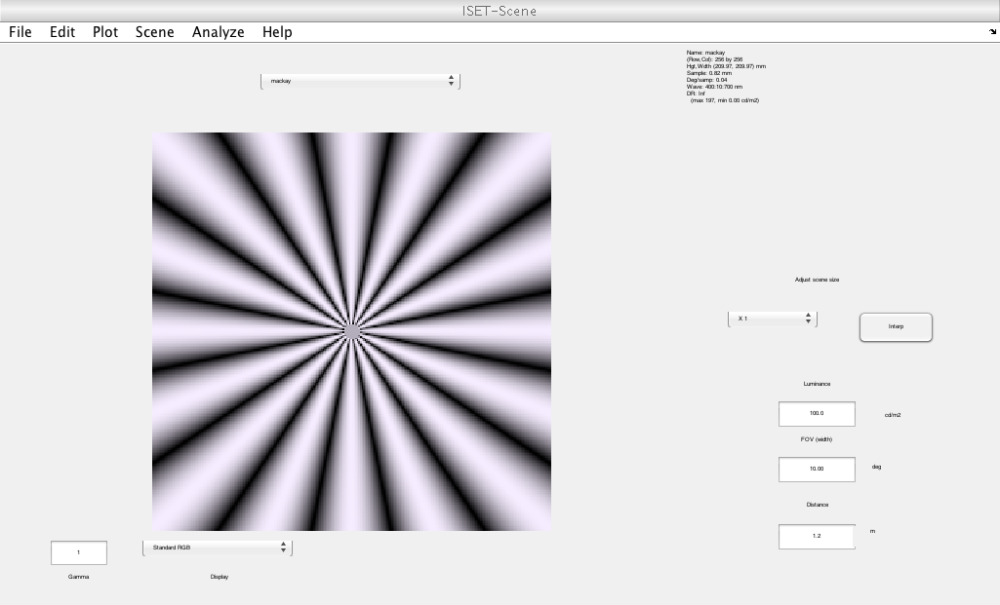
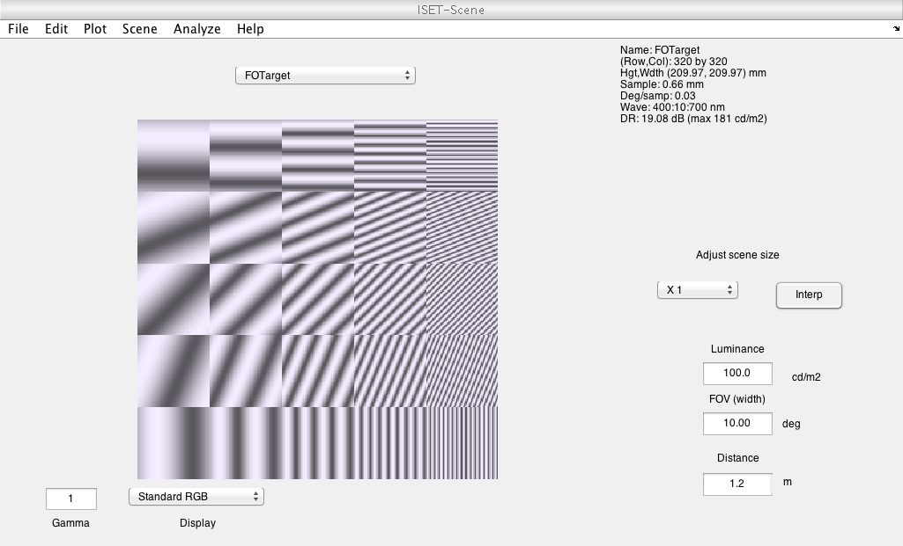
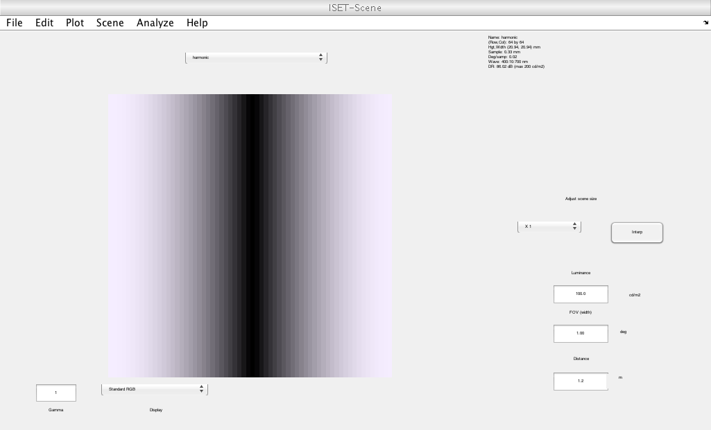
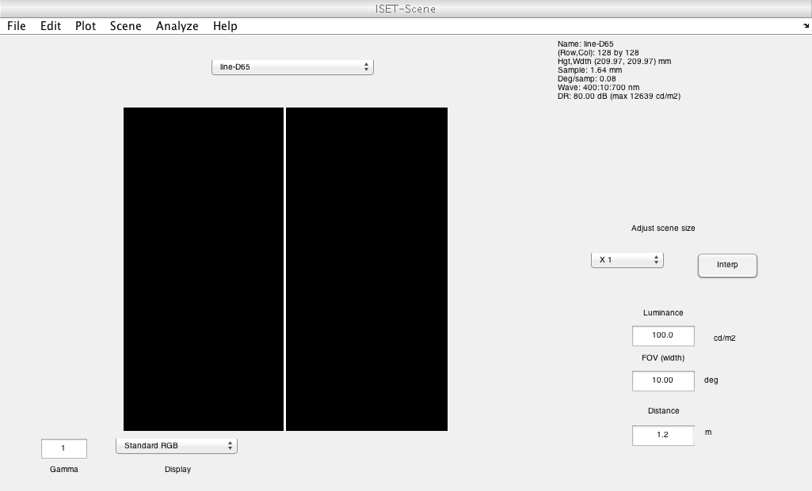
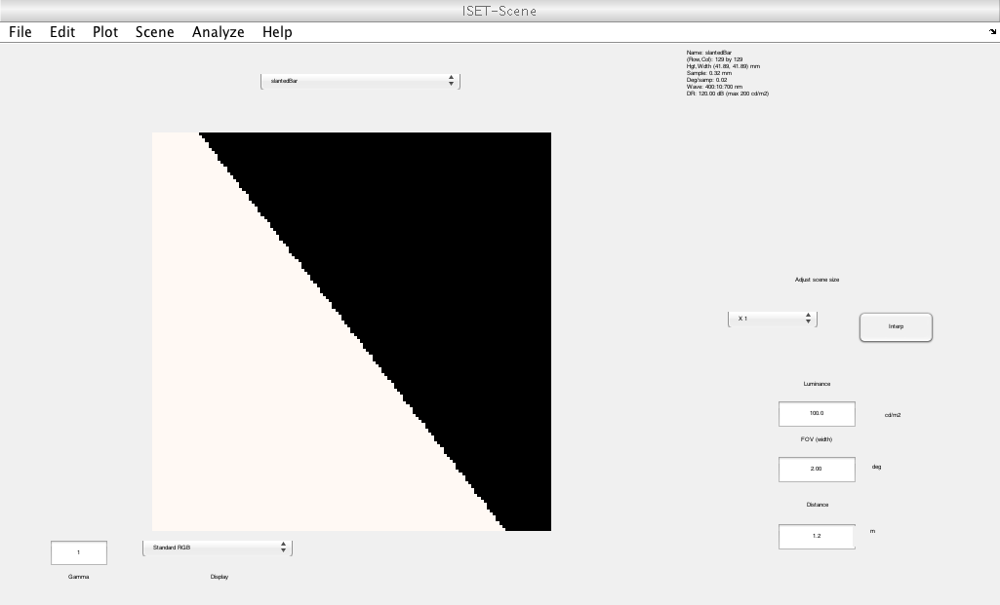
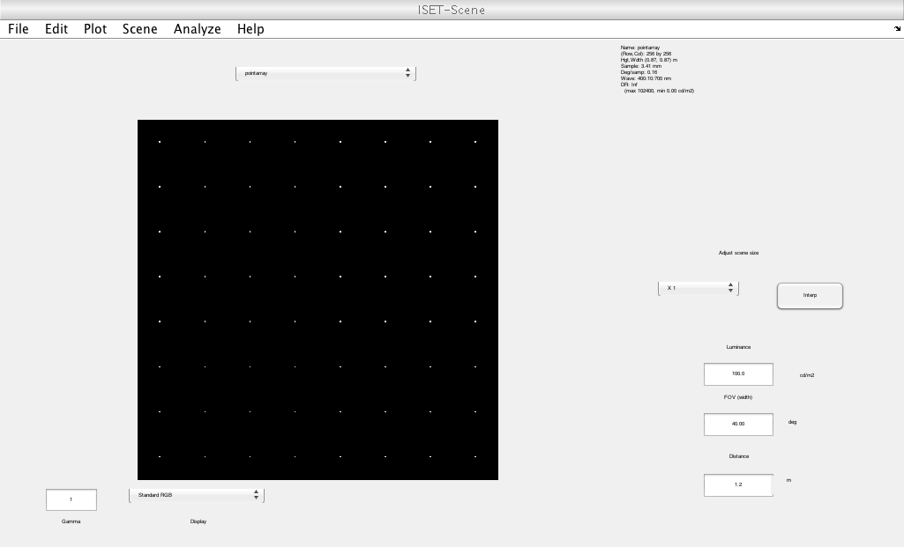
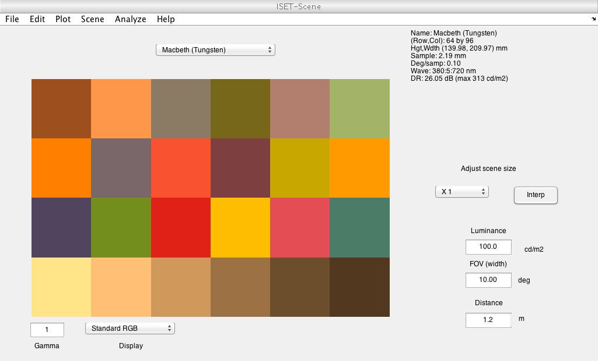
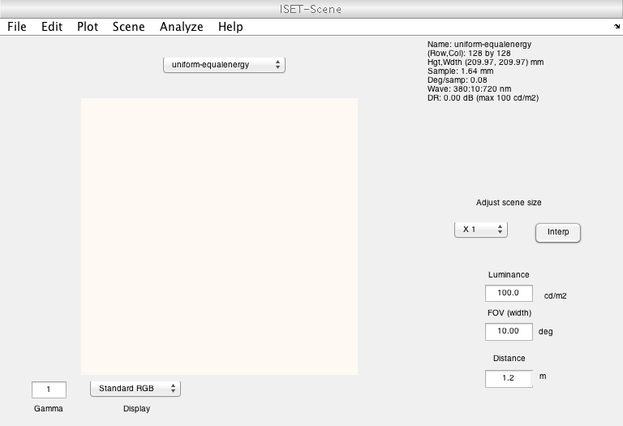

Contents
function varargout = v_sceneExamples(varargin) % % Illustrate and test the types of synthetic scenes. % % These synthetic scenes are useful for testing different features of the % optics and sensors. % % Copyright ImagEval Consultants, LLC, 2003. varargout = UnitTest.runValidationRun(@ValidationFunction, nargout, varargin); end
Validate the scene examples
function ValidationFunction(runTimeParams)
Initialize ISET
This clears the workspace and hides the main ISET window
s_initISET
Simple message
UnitTest.validationRecord('SIMPLE_MESSAGE','Testing scene creation. Some scenes are not displayed.');
Rings and Rays
radF = 24; imSize = 512;
scene = sceneCreate('mackay',radF,imSize);
if (runTimeParams.generatePlots)
vcAddAndSelectObject(scene); sceneWindow;
end
UnitTest.validationData('makay', scene);
scene = sceneCreate('rings rays');
if (runTimeParams.generatePlots)
vcAddAndSelectObject(scene); sceneWindow;
end
UnitTest.validationData('ringsandrays', scene);
 Frequency orientation - useful for analyzing demosaicking
parms.angles = linspace(0,pi/2,5);
parms.freqs = [1,2,4,8,16];
parms.blockSize = 64;
parms.contrast = .8;
scene = sceneCreate('frequency orientation',parms);
if (runTimeParams.generatePlots)
vcAddAndSelectObject(scene); sceneWindow;
end
UnitTest.validationData('freqorient', scene);
 Harmonic
parms.freq = 1; parms.contrast = 1; parms.ph = 0;
parms.ang= 0; parms.row = 64; parms.col = 64; parms.GaborFlag=0;
[scene,parms] = sceneCreate('harmonic',parms);
if (runTimeParams.generatePlots)
vcAddAndSelectObject(scene); sceneWindow;
end
UnitTest.validationData('harmonic', scene);
 Checkerboard
period = 16; spacing = 8; spectralType = 'ep'; scene = sceneCreate('checkerboard',period,spacing,spectralType); if (runTimeParams.generatePlots) vcAddAndSelectObject(scene); sceneWindow; end UnitTest.validationData('checkerboard', scene);

Single line
imageSize = 128;
scene = sceneCreate('lined65',imageSize);
if (runTimeParams.generatePlots)
vcAddAndSelectObject(scene); sceneWindow;
end
UnitTest.validationData('singleline', scene);
 Slanted Bar
imageSize = 128;
edgeSlope = 1.3;
scene = sceneCreate('slantedBar',imageSize,edgeSlope);
if (runTimeParams.generatePlots)
vcAddAndSelectObject(scene); sceneWindow;
end
UnitTest.validationData('slantedbar', scene);
 Grid Lines
imageSize = 128;
pixelsBetweenLines = 16;
scene = sceneCreate('grid lines',imageSize,pixelsBetweenLines);
% vcAddAndSelectObject(scene); sceneWindow;
UnitTest.validationData('gridlines', scene);
Point Array
imageSize = 256;
pixelsBetweenPoints = 32;
scene = sceneCreate('point array',imageSize,pixelsBetweenPoints);
if (runTimeParams.generatePlots)
vcAddAndSelectObject(scene); sceneWindow;
end
UnitTest.validationData('pointarray', scene);
 Macbeth
patchSizePixels = 16;
spectrum.wave = 380:5:720;
scene = sceneCreate('macbeth tungsten',patchSizePixels,spectrum);
scene.data;
scene = sceneCreate('macbeth tungsten',patchSizePixels,spectrum,'bitdepth',32);
scene.data;
if (runTimeParams.generatePlots)
vcAddAndSelectObject(scene); sceneWindow;
end
UnitTest.validationData('macbeth', scene);
 Uniform Field
sz = 128;
wavelength = 380:10:720;
scene = sceneCreate('uniformEESpecify',sz,wavelength);
if (runTimeParams.generatePlots)
vcAddAndSelectObject(scene); sceneWindow;
end
UnitTest.validationData('uniformfield', scene);
 End
end